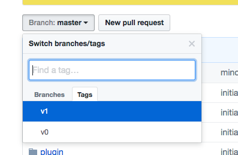
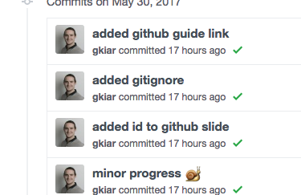
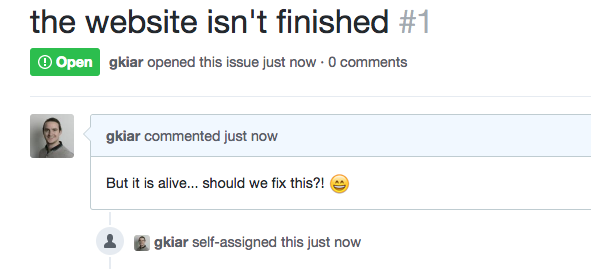
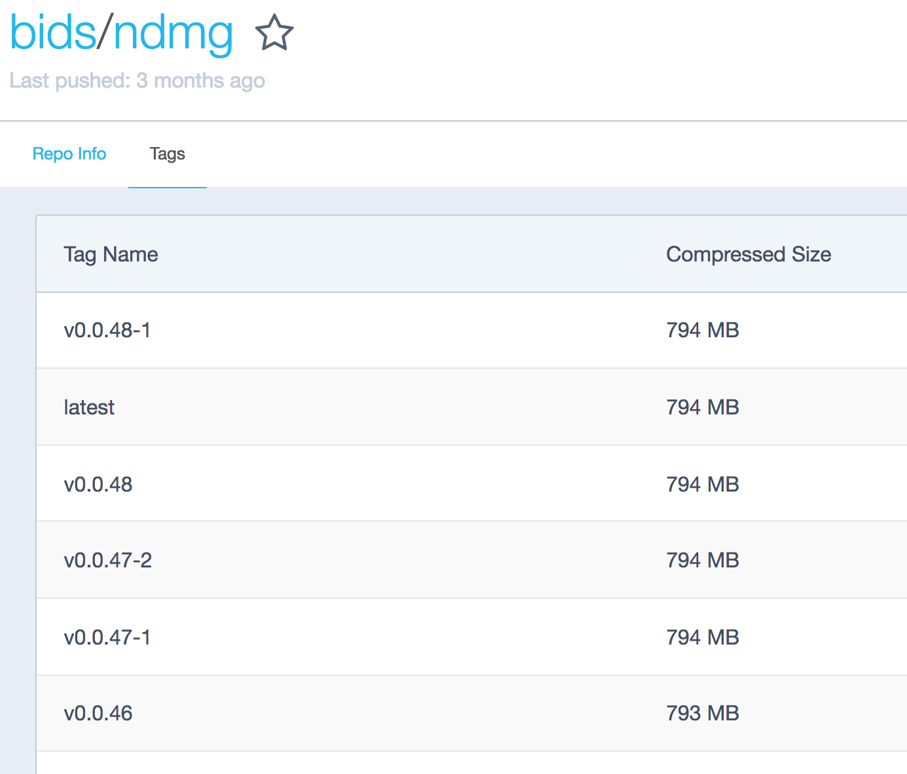
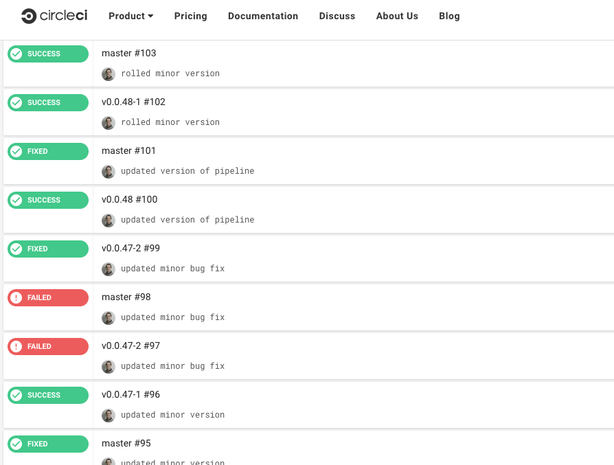
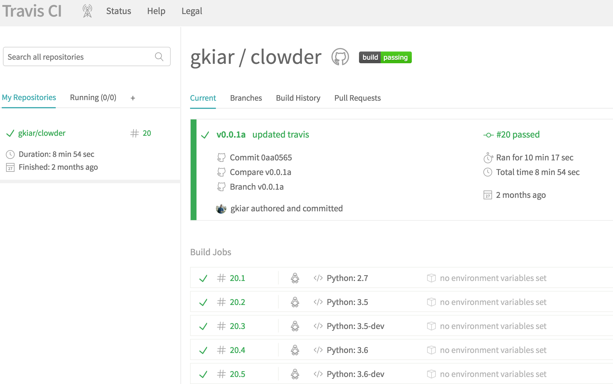
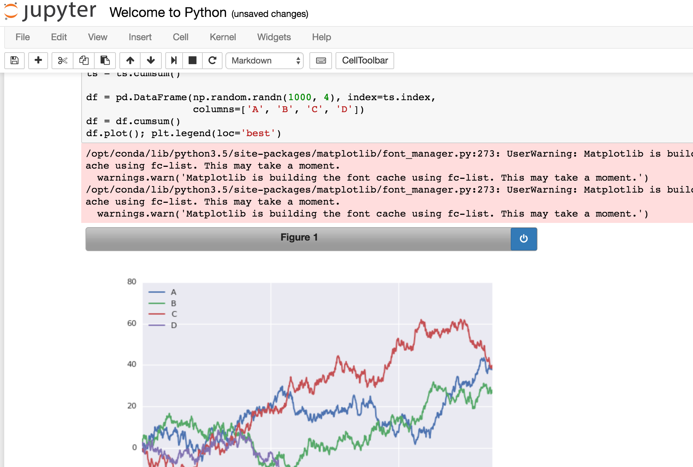
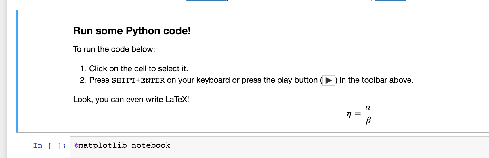

BrainHack
:
A Beginners Guide to Computational Neuroscience
Greg Kiar & the BrainHack Team
Outline
we have...
- an overwhelming amount of neuroscience data
- a myriad of tools
- a growing need for (basic) coding
... and we want to...
- process lots of data
- perform robust analyses
- learn and communicate our results
- share our methods
- enable others to build upon our work
..., but...
- code can be unorganized and hard to use
- tools give different answers across versions
- differences across operating systems are confusing
- reproducing analyses is often difficult
- this sounds like it requires lots of programming
...; thankfully...
- tools exist to help with these problems
- we're in BrainHack 101

major challenges
- code is often unorganized, unversioned, and undocumented
- installation is difficult and operating systems can cause differences
- communicating and reproducing analyses is often difficult or incomplete
approach
1. FOR (each_challenge):
2. discuss_problem;
3. describe_solution;
4. learn_about_tools;
5. practice;
6. ENDFORchallenge 1:
code sharing
- how do you share it?
- what happens when you make changes?
- what if there are bugs?
- how do you get credit?
features we want
- code hosted in the cloud
- version control and change tracking
- mechanism for receiving feedback
- possibility of attaching a DOI
tools to help
- Github
- Zenodo
Github
... has a great getting started guide
Before jumping in, we'll quickly demonstrate Github as a solution for our problem
cloud-hosted code
versions and changes
 feedback
zenodo
jumping in
head back up to the guide and start playing
your objective is to:
- create a repo
- add a license
- add "code"
- create a version
- create an issue
- add hook for Zenodo
challenge 2:
tool portability
- how can you make it work acoss OS?
- how can you make install easy?
- how can you make it clear what version you're using?
features we want
- agnostic to OS
- one-click installation
- version control
tools to help
- Docker
- CircleCI/TravisCI*
*we mention continuous integration (CI) here and provide resources, but it is beyond the scope of what we cover in class.
Docker
... also has a great getting started guide
Let's again demonstrate how Docker is a suitable answer to our problem, then play
OS agnostic
one-click install
version control
continuous integration
 trying it out
head back up, click on the guide, and give it a shot
your task is to:
- install Docker
- launch + run "hello, world!"
- create Dockerhub account
- create simple Dockerfile
- build your image
- push image to Dockerhub
- push Dockerfile to GitHub
- (bonus) link with CI
challenge 3:
reproducible analyses
- how can you make your analysis reproducible?
- how can you communicate it clearly?
- how can you demonstrate the robustness of your analyses?
features we want
- simple execution-interface
- text annotations of analyses
- interactive widgets
tools to help
- Jupyter
- Jupyter Widgets
jupyter
... has several resources to help you get started with Jupyter and widgets.
We are going to demonstrate using Jupyter with Python, but it works with other languages as well
execution interface
text annotations
interactive widgets

trying it out
Go back to the documentation, click on the guide, and play!
your task is to:
- install Jupyter and Jupyter Widgets
- launch a Jupyter server
- create a Jupyter notebook
- use a Jupyter widget in your notebook
- push your notebook to GitHub
tying it together
Now that you have learned all of these tools, your challenge is to create and share a reproducible and open analysis including the following:
- code on Github
- data somewhere public*
- environment in a Dockerfile
- interactive plot/analysis in Jupyter
*"where" depends on the data; ask me first
there are resources
For each of these steps, there is an example in the scratch the dura repository which can help, as well as everything you've done so far.
There is also suggested data that can serve as a nice starting place for some cool graph analyses in this repo
closing remarks
you are all awesome, did awesome, and I hope you enjoyed yourselves!
learn more with some of these helpful links
please always reach out with any questions!

Thank you!!!
Acknowledgements


 ......
......